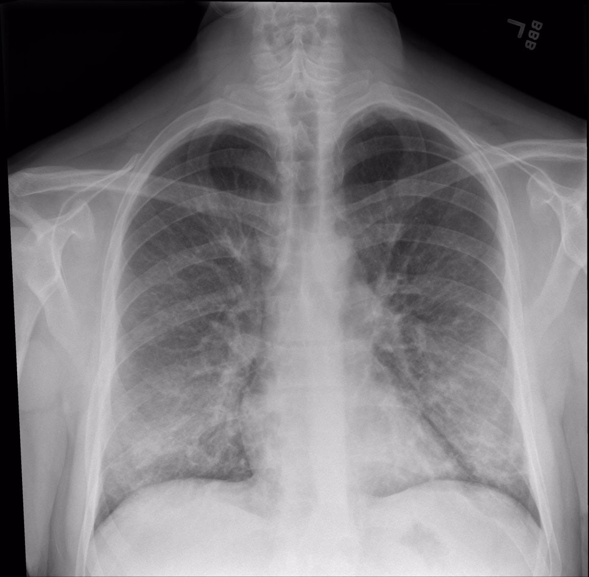

<ion-header class="ion-no-border">
    <ion-toolbar color="primary" no-border>
        <ion-buttons slot="start">
            <ion-button>
                <ion-icon name="menu"></ion-icon>
            </ion-button>
        </ion-buttons>
    </ion-toolbar>
</ion-header>

<ion-content [fullscreen]="true">
    <div class="banner">
        
        <div class="caption ion-padding">
            Asistente de <br> COVID 19
        </div>
    </div>
    <div class="input">
        <div class="seleccion">
            <input type="file" (change)="capturarFile($event)">
        </div>
    </div>

    <div class="event-slider">
        <ion-slides [options]="{ slidesPerView: 'auto', zoom: false, grabCursor: true }" class="default-left-padding">
            <ion-slide>
                <ion-col class="ion-text-left">
                    <ion-card>
                        <ion-card-header class="ion-no-padding">
                            
                        </ion-card-header>
                        <ion-card-content>
                            <h2 class="eventname">Radiografia de torax</h2>
                            <div class="additional-info">
                                <ion-button (click)="subirArchivo()">Upload</ion-button>
                            </div>
                        </ion-card-content>
                    </ion-card>
                </ion-col>
            </ion-slide>

            <ion-slide>
                <ion-col class="ion-text-left">
                    <ion-card>
                        <ion-card-header class="ion-no-padding">
                            
                        </ion-card-header>

                        <ion-card-content>

                            <h2 class="eventname">Resultado</h2>
                            <p class="location">
                                <ion-icon name="pulse-outline"></ion-icon> Si tiene o no tiene covid</p>


                        </ion-card-content>
                    </ion-card>
                </ion-col>
            </ion-slide>
        </ion-slides>
    </div>

    <div class="container">
        <div class="prev">
            <swiper #swiper [allowTouchMove]="false">
                <ng-template swiperSlide></ng-template>
                <ng-template swiperSlide> </ng-template>
                <ng-template swiperSlide> </ng-template>

            </swiper>
        </div>
    </div>

    <ion-footer>
        <ion-row>
            <ion-col size="4">
                <ion-button expand="full" (click)="prev()">
                    <ion-icon name="arrow-back-circle-outline"></ion-icon>
                </ion-button>
            </ion-col>
            <ion-col size="4">
                <ion-button expand="full" (click)="toogleTouch()">
                    <ion-icon name="lock-closed-outline"></ion-icon>
                </ion-button>
            </ion-col>

            <ion-col size="4">
                <ion-button expand="full" (click)="next()">
                    <ion-icon name="arrow-forward-circle-outline"></ion-icon>
                </ion-button>
            </ion-col>

        </ion-row>
    </ion-footer>

</ion-content>